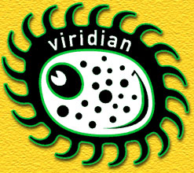
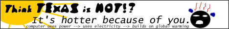

Background
The Viridians
The Viridians are a
group of environmentalists who are trying to promote awareness of our
treatment towards the earth through an art and design movement. The
founder of the Viridians, Bruce Sterling, created all of the group's
principles and first widely presented his ideas on October 14, 1998
when he gave his "Viridian Design Speech" at the Yerba Buena Center
for the Arts in San Francisco. He also allows little dispute over the
principles, stating that anyone who wants to change his principles
should start their own movement.
The Contests
Although the group concedes that they
will, one day, be obsolete and/or die off, to keep them active and
alive presently, there are various
contests that
members participate in. "Big Mike," the Viridians' mascot [above
right] was a result the
first
contest at
ViridianDesign.org. It is through these contests that new
environmental awareness designs are created. The Viridians hope that
through their designs, people will become aware of the pollution that
we create and how we harm the earth. Perhaps, they will have a large
enough number of followers or a powerful political party (capable of
making important decisions that can make a difference) to eventually
produce beneficial effects upon earth and the environment.
Principles
The Viridians have certain design
principles that they try to convey when creating designs for contests
and/or just for the movement. They range from ideas regarding
lifestyle, morality, politics and more. Following, are summarized
versions of their
principles.
Futuristic Principles
- "Eat What you Kill" - If you
stop doing something in order to help the environment by rendering
something obsolete, don't just ignore that object, but rather, fully
comprehend it. Show respect to the designers, so that you can also
comprehend your own accomplishments.
- "Avoid the Timeless, Embrace
Decay" - Entropy should be shown more attention because nothing
physical is eternal. The Viridians believe that decay should be
studied and harnessed.
- "Planned Evanescence" -
Once a product is obsolete, all of its physical traces and even
itself should vanish completely.
- "The Future is History -- Be When
You Are" - Worry about fixing things now, not what could
have been done or what should be done later. Solve your existing,
present problems and do not romanticize about the past and/or
future.
- "History Accumulates" -
History only grows, so we need better ways of storing it.
Moral Principles
- "Look at the Underside First"
- In order to be a wise designer and/or critic, you must look at the
bad parts of products before the good parts.
- "Design for Evil" - Always
take into considering a product in the wrong hands, design a product
so it cannot be used in a very harmful/evil way.
- "Superstition Isn't Inspiration"
- Don't allow your imagination to overcome the facts of the real
world.
Political Principles
- "Viridian Inactivism" - Do
not become involved with activism. A better way of benefiting the
environment is to find something that worsens the problem and stop
doing it (don't go out for a joy ride in your car, but rather enjoy
the stars in your backyard, etc.).
- "Do Less with Less" - We
should try to find new ways of doing things that do not harm the
environment, but also, do not go about life in a frenetic way;
relax.
- "There's No One so Green As the
Dead" - Don't argue about who is "Greener" - dead people are the
"Greenest" because living people contribute to the CO2 load by just
existing. Just think about your life and how you use the earth's
resources.
Avant- Technogarde Principles
- "The Biological Isn't Logical"
- Not everything has to be non-chaotic and created with careful
precision. Nature grew sporadically without a set pattern, so when
you design, learn from nature and "chaos."
- "Augment Reality: Aestheticize
All Sensors" - Sensors should be the next aesthetic
frontier because they must interact with human sensorium.
- "Make the Invisible Visible"
- We can now do things that artists never could before because we
can see things better (better scientific instruments). We should
exploit this ability artistically.
- "Less Mass, More Data" -
Physical resources should be replaced with information.
- "Tangible Cyberspace" -
Create objects that are created in the digital form.
- "Seek the Biomorphic and the
Transorganic" - We must thrive in an altered nature (due to
technology and our pollution).
- "Datamine Nature" - We should
look for aesthetic novelty in things we could not see before
(microorganisms, etc.).
- "Grow Complexity" - Create
aesthetically pleasing designs that were formerly impossible.
Research Principles
- "Walk Through the Walls of
Knowledge Guilds" - Boundaries that separate art, science,
medicine, etc. are not concretely set. You can do what it takes
(within reason) to learn more about subjects.
Contests
Contest Entries - Expression
The entries themselves express both the
ideas of the group as a whole as well as each individual's unique
perspective. Although large differences in the group's principles are
not "allowed" (Sterling believes they should just create their own
movement), different interpretations and ideas on principles are
welcome.
The design to the left
avant-technogarde design principles. Taking many aspects of nature and
incorporating them into a teapot/teakettle design, the artist conveys
the message that there are alternate ways of doing things that do not
pollute the earth. The pot also seems to be alive, unlike a plastic,
metal, or ceramic pot used by many people today. This shows that we
don't have to destroy the environment to use it but rather "coexist"
in a symbiotic relationship with it. All of the artist's ideas
coincide with the Viridian's ideas and principles.
The pot to the right was submitted to
the same contest as the "organic teapot" (which won the contest).
Obviously the design elements vary drastically. The winner used 3D
computer generated graphics while the one to the right used very
simple computer drawing tools (or just scanned it in?). The "chicken
pot" takes design ideas from a chicken, depicting it on the pot. A
majority of the pot is also green, perhaps symbolizing nature and the
chicken symbolizing life. Although ideas are not conveyed as well as
the winner (perhaps why it is not the winner? =) it is obvious that
different ideas and focus points were aimed at by the two artists,
although both used the principle "The Biological Isn't Logical."
Technology's Effect on Social
Interaction
The
Viridian's view on technology is both good and bad. Although they view
many technologies as environmentally hazardous, they use technology in
order to convey their message. Even in their emails they append the
text "O=c=O" to remind themselves (and others) that even their small
message is using up power and contributing to the carbon dioxide load
in the air/environment.
The graphic to the left depicts the
words "HEAT KILLS" and has an image of a person in agony with bright
sun rays upon him. In the background, is a large city with tall
buildings. The artist is conveying the message that technology kills
(pollution made by technology, like cars, produces global warming)
people. What better way to end social interaction than to kill people?
No people - no social interaction. Thus, the Viridians say that
technology can destroy society by destroying us by destroying our environment.
On the other hand, the Viridians also
believe technology can help us. The "Greeny Megawatt" to the right is
a parody of Reddy Kilowatt (a symbol of electric/power utility
companies which produce a lot of pollution to provide power).
Depicted, is not Reddy Kilowatt being destroyed (which would convey a
message that technology should be destroyed), but rather he is instead
transformed into a "green" environmentally sound Greeny Megawatt.
Thus, the Viridians believe we can use technology (just in a different
way than we are now) with a more environmentally aware perspective in order
to improve our quality of life while preserving our earth.
Interaction with Basic Tenets
Do the artists who participate in the
Viridian contests live up to or redefine the basic tenets of the
Viridians? I believe that a majority of the principles are broad
enough so that they are very hard to redefine. Therefore, the only
thing entries can do is live up the tenets/principles. Since
every artist can have their own view upon the principle and how they
want to go about conveying their idea, I think that every entry lives
up the tenets/principles that the artist aimed for. Similarly to
"beauty is in the eye of the beholder," certain works of art could
have a more profound effect on certain people. Looking again at the
two teapots, I was more effected by the "organic teapot" than the
"chicken teapot" - but someone else may have a different
opinion, so I think that every entry lives up to the basic tenets in
someone's opinion, making it worthwhile.
Evolution of Contests
The contests themselves did gradually
change over time. In the beginning, many of the contests were more for
the benefit of the group rather than to convey their beliefs (although
they did convey their beliefs while benefiting the group). For
example, many of the first contests were to make "fancier" the group
and it's website. There was the
Big
Mike contest, and the
banner
contest. Although they did eventually convey the Viridians' ideas (by
attracting more people or to make them look "cool" - Big Mike is kind
of cool looking =), they did not do so as directly. Later contests'
sole purpose (or main purpose) was to convey Viridian ideas and
principles. Contests that fit into this category are the
Greenhouse Disaster Symbol,
Dead Mike, and
Reddy Kilowatt Makeover contests.
Evolution of Entries
Deciding if the entries themselves
changed over time is a hard decision. Many different people
contributed to the contests and many submitted drastically different
designs. Since multiple people worked on different designs, there is
no real point of comparison between on contest and another. One
contest may, overall have better looking art (although that'd be just
in my opinion) than another, but that may not constitute an
"evolution"... it may just mean different people submitted ideas.
There
are patterns in what people submit. There are generally serious
submissions and comic ones, almost every contest has at least one of
both. All of the entries of course share the same idea, in general,
and use most of the same principles, but everyone does it slightly
differently. The design to the left is rather simple and not quite
comical at all, yet it conveys global warming. The image on the right
is meant to show the same message, however it does it in a bit more
artistic/cartoony/comic way (hey, he looks funny). So, entries within
contests obviously vary greatly because artists often have drastically
different ways of conveying themselves.
However, with ideas ranging from pieces of art
like:

to photos like:
or even to plain text
contest submissions like:
From: nonwhiz@earthlink.net^^^^^^^^^^^^^^^^^^^^*****
(Michael Treece)
A gizmo is placed on the dashboard, wired into the car's fuel gauge
and odometer. When the voice-recognition apparatus perceives the
driver saying, "Damn! The price of gas is outrageous!", a projected
display pops up indicating gas mileage, the price of operating the
car, and the CO2 generated, year-to-date, by the vehicle.
The background of this display would show spectral bicyclists,
happily plying the roads in their smog-free way, liberated from the
tyranny of the pump.
Advantages: Reminds drivers that it's time to fill the tank. Reminds
drivers to purchase more BP stock.
Disadvantages: Distracts drivers so that they run into pedestrians and
bicyclists.
... it's almost impossible to state
whether the entries themselves evolved as a whole from contest to
contest. On a number of entries perspective, there are probably more
submissions as time progressed because the group gained followers, but
other than that, I don't think a very conclusive answer can be made as
to whether the entries themselves evolved.
Technology
Used for Good
As
shown earlier, through Greeny Megawatt, the Viridians don't desire to
totally annihilate technology, but rather use it to fix technology's
faults. Or rather, the faults of people who use technology.
In the ad to the left, the Viridian
ideas and design movement (portrayed/symbolized by Big Mike) is said
to be thought of as "f@#%ing cool" by the scientific community. Since
scientists are very much related to technology, Viridians believe it
can be made to do good towards the environment. They would like
pro-environment technologies to thought of as "cool" and good to have
rather than a pollution creating counter-product.
Unlike ideas such as the Unabomber's
Manifesto which wanted almost no technology/industry whatsoever,
Viridians merely want technologies to be created more environmentally
friendly and for that to be portrayed as a "cool thing." Also, since
they also believe in the principle, "Planned Evanescence," the older
product (pollution creating one) should be destroyed as well as all
physical traces (the pollution it creates) - thus improving the
environment and our quality of life.
Left Alone
If
technology is not redesigned to be more environmentally sound, then it
will end up destroying the earth and probably humans along with it.
This idea is very much evident in many of the Viridians' design
contests. The "Got Milk?" spoof
to the right demonstrates this idea very bluntly with the text
"redesign the world/or end it."
The
design to the left also has a similar message, although not as plainly
said. The sun is shown "attacking" a person due to violent weather
produced by pollution. Again, the two both portray similar Viridian
beliefs yet do it very differently showing that there is not one
specific way the Viridians must go about conveying their message.
How does art stop pollution?
Many people wonder how the Viridians
actually help stop environmental pollution. They concede the fact that
they pollute ("O=c=O" example) yet don't really do anything to stop
pollution (other than small little personal habit changes, etc.).
The Viridians respond to this through
their designs. For example:
The
picture shows Big Mike (the Viridians group) and states that art
can stop global warming. The
group believes that through their art works and designs they can
persuade people to their cause. They know that alone they can't do
much, but if they promoted environmentally safe products to be "cool"
(like scientists think Big Mike is cool example) then they may be able
to attract a larger portion of the population and make them think
about the environment. What they would really like is to persuade a
person or group that has significant power, such as a political group
so that they can have national or even global effects that can help
the earth. So, the art does not
directly stop pollution like electric-powered cars do, but they do (at
least the Viridians hope so) promote awareness which can lead to
stopping pollution in the future. Hey, better later than never. Or
wait, ti's better now than never.... oh well, you get the point. =)
My Entry
In order to get a better understanding
of the Viridian contests and their entries, I will "participate" by
creating my own entry to a contest.

The above image is a submission to the
banner
contest. Here is an excerpt from the rules:
First, we
need constructive, forward-looking banners for clean websites. We're
not particular about their chosen source of energy, except that we
despise CO2, and we're not real big on nuclear fission. We prefer
sustainable, non-brittle forms of power, that can't evaporate cities
full of civilians in one big flash. So, the net requires new banners
for inventive, novel websites that choose to use wind, solar, hydro,
tides, biomass, alcohol fuel-cells, ocean thermal-energy conversion,
geothermal, and, who knows, maybe even cold fusion and quantum
sonoluminescence.
If you're in a darker mood, we'd love to see you create a sinister,
hideous, reprehensible banner for websites that still insist on
burning the smashed juice and crust of long-dead organisms. After all,
the vast majority of us are still using this vile, nasty form of
power, and we are therefore required to commit acts we know to be
evil, whether we like it or not. If you're just one little user of,
for instance, AOL or Geocities, your personal websites will be spewing
dirty power for quite a while. However, if we had the proper kind of
nasty banners, we could load them up as a personal protest at this
unbearable status-quo.
Pretty much, the idea is
to create a banner that informs users of computers (and surfers of the
web) that even using their internet browser and/or emailing uses up
power and adds to the global warming effect (similar to the message
conveyed by the "O=c=O" text). The energy required by computers is
generated by burning fossils and/or nuclear power (both of which the
Viridians aren't too keen of).
My entry basically says the above except
in a comic way. It only pertaining to Texas viewers however (thus not
really useful for a national or international website) but makes the
viewer think about the consequences of their actions nonetheless. To
the right of the banner is a very uncomfortable person (with heat
resonating from his head and sweat from the side =).
Although my banner doesn't specifically
mention fossils, CO2, or nuclear power plants, it does basically the
same thing in a more subtle way. I chose a comic approach because I
like comedy and I think people are more likely to treat your ideas
with thought if you do it a good way... I think comedy is a good way.
(Office Space's creator must've thought the same thing? or
maybe he just wanted to be funny...). |